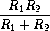

Q. Show that under the assumption of small percentage tolerances there is a simple formula for the approximate percentage tolerance of the product of two intervals in terms of the tolerances of the factors. You may simplify the problem by assuming that all numbers are positive.
After considerable work, Alyssa P. Hacker delivers her finished system. Several years later, after she has forgotten all about it, she gets a frenzied call from an irate user, Lem E. Tweakit. It seems that Lem has noticed that the formula for parallel resistors can be written in two algebraically equivalent ways:
 and  
He has written the following two programs, each of which computes the parallel-resistors formula differently:
(define (par1 r1 r2)
(div-interval (mul-interval r1 r2)
(add-interval r1 r2)))
(define (par2 r1 r2)
(let ((one (make-interval 1 1)))
(div-interval one
(add-interval (div-interval one r1)
(div-interval one r2)))))Lem complains that Alyssa’s program gives different answers for the two ways of computing. This is a serious complaint.